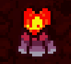

Sinine või punane lüliti, mis laseb mängijal vahetada kahe erineva taseme versiooni vahel. Ainult kasutatav kaheksandas tasemes, kus saab vahetada põleva vulkaani ja jäise koopa taseme teema vahel. Lüliti aktiveerimine vahetab välja või võtab ära, kõik taseme teema spetsiifilised objektid.